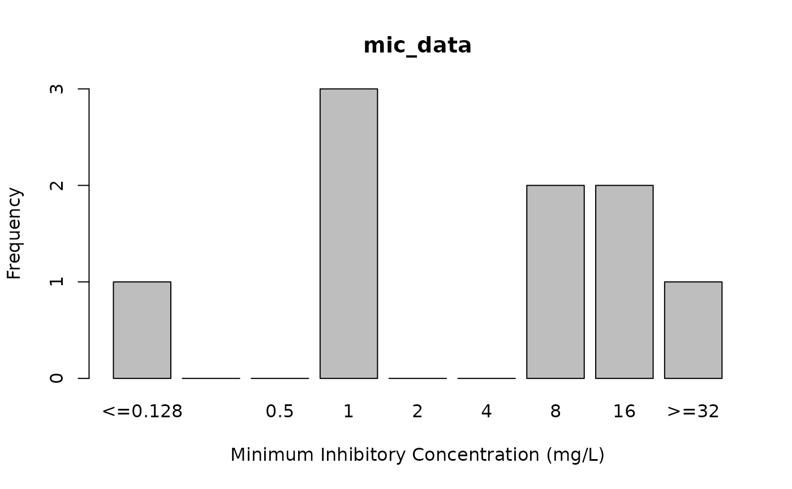

This transforms vectors to a new class mic, which treats the input as decimal numbers, while maintaining operators (such as ">=") and only allowing valid MIC values known to the field of (medical) microbiology.
Usage
as.mic(x, na.rm = FALSE, keep_operators = "all")
is.mic(x)
NA_mic_
rescale_mic(x, mic_range, keep_operators = "edges", as.mic = TRUE)
mic_p50(x, na.rm = FALSE, ...)
mic_p90(x, na.rm = FALSE, ...)
# S3 method for class 'mic'
droplevels(x, as.mic = FALSE, ...)Arguments
- x
- na.rm
A logical indicating whether missing values should be removed.
- keep_operators
A character specifying how to handle operators (such as
>and<=) in the input. Accepts one of three values:"all"(orTRUE) to keep all operators,"none"(orFALSE) to remove all operators, or"edges"to keep operators only at both ends of the range.- mic_range
A manual range to rescale the MIC values, e.g.,
mic_range = c(0.001, 32). UseNAto prevent rescaling on one side, e.g.,mic_range = c(NA, 32).- as.mic
A logical to indicate whether the
micclass should be kept - the default isTRUEforrescale_mic()andFALSEfordroplevels(). When setting this toFALSEinrescale_mic(), the output will have factor levels that acknowledgemic_range.- ...
Arguments passed on to methods.
Value
Ordered factor with additional class mic, that in mathematical operations acts as a numeric vector. Bear in mind that the outcome of any mathematical operation on MICs will return a numeric value.
Details
To interpret MIC values as SIR values, use as.sir() on MIC values. It supports guidelines from EUCAST (2011-2025) and CLSI (2011-2025).
This class for MIC values is a quite a special data type: formally it is an ordered factor with valid MIC values as factor levels (to make sure only valid MIC values are retained), but for any mathematical operation it acts as decimal numbers:
x <- random_mic(10)
x
#> Class 'mic'
#> [1] 16 1 8 8 64 >=128 0.0625 32 32 16
is.factor(x)
#> [1] TRUE
x[1] * 2
#> [1] 32
median(x)
#> [1] 26This makes it possible to maintain operators that often come with MIC values, such ">=" and "<=", even when filtering using numeric values in data analysis, e.g.:
x[x > 4]
#> Class 'mic'
#> [1] 16 8 8 64 >=128 32 32 16
df <- data.frame(x, hospital = "A")
subset(df, x > 4) # or with dplyr: df %>% filter(x > 4)
#> x hospital
#> 1 16 A
#> 5 64 A
#> 6 >=128 A
#> 8 32 A
#> 9 32 A
#> 10 16 AAll so-called group generic functions are implemented for the MIC class (such as !, !=, <, >=, exp(), log2()). Some mathematical functions are also implemented (such as quantile(), median(), fivenum()). Since sd() and var() are non-generic functions, these could not be extended. Use mad() as an alternative, or use e.g. sd(as.numeric(x)) where x is your vector of MIC values.
Using as.double() or as.numeric() on MIC values will remove the operators and return a numeric vector. Do not use as.integer() on MIC values as by the R convention on factors, it will return the index of the factor levels (which is often useless for regular users).
The function is.mic() detects if the input contains class mic. If the input is a data.frame or list, it iterates over all columns/items and returns a logical vector.
Use droplevels() to drop unused levels. At default, it will return a plain factor. Use droplevels(..., as.mic = TRUE) to maintain the mic class.
With rescale_mic(), existing MIC ranges can be limited to a defined range of MIC values. This can be useful to better compare MIC distributions.
For ggplot2, use one of the scale_*_mic() functions to plot MIC values. They allows custom MIC ranges and to plot intermediate log2 levels for missing MIC values.
NA_mic_ is a missing value of the new mic class, analogous to e.g. base R's NA_character_.
Use mic_p50() and mic_p90() to get the 50th and 90th percentile of MIC values. They return 'normal' numeric values.
Examples
mic_data <- as.mic(c(">=32", "1.0", "1", "1.00", 8, "<=0.128", "8", "16", "16"))
mic_data
#> Class 'mic'
#> [1] >=32 1 1 1 8 <=0.128 8 16 16
is.mic(mic_data)
#> [1] TRUE
# this can also coerce combined MIC/SIR values:
as.mic("<=0.002; S")
#> Class 'mic'
#> [1] <=0.002
# mathematical processing treats MICs as numeric values
fivenum(mic_data)
#> [1] 0.128 1.000 8.000 16.000 32.000
quantile(mic_data)
#> 0% 25% 50% 75% 100%
#> 0.128 1.000 8.000 16.000 32.000
all(mic_data < 512)
#> [1] TRUE
# rescale MICs using rescale_mic()
rescale_mic(mic_data, mic_range = c(4, 16))
#> Class 'mic'
#> [1] >=16 <=4 <=4 <=4 8 <=4 8 >=16 >=16
# interpret MIC values
as.sir(
x = as.mic(2),
mo = as.mo("Streptococcus pneumoniae"),
ab = "AMX",
guideline = "EUCAST"
)
#> Class 'sir'
#> [1] R
as.sir(
x = as.mic(c(0.01, 2, 4, 8)),
mo = as.mo("Streptococcus pneumoniae"),
ab = "AMX",
guideline = "EUCAST"
)
#> Class 'sir'
#> [1] S R R R
# plot MIC values, see ?plot
plot(mic_data)

plot(mic_data, mo = "E. coli", ab = "cipro")
if (require("ggplot2")) {
autoplot(mic_data, mo = "E. coli", ab = "cipro")
}
if (require("ggplot2")) {
autoplot(mic_data, mo = "E. coli", ab = "cipro", language = "nl") # Dutch
}